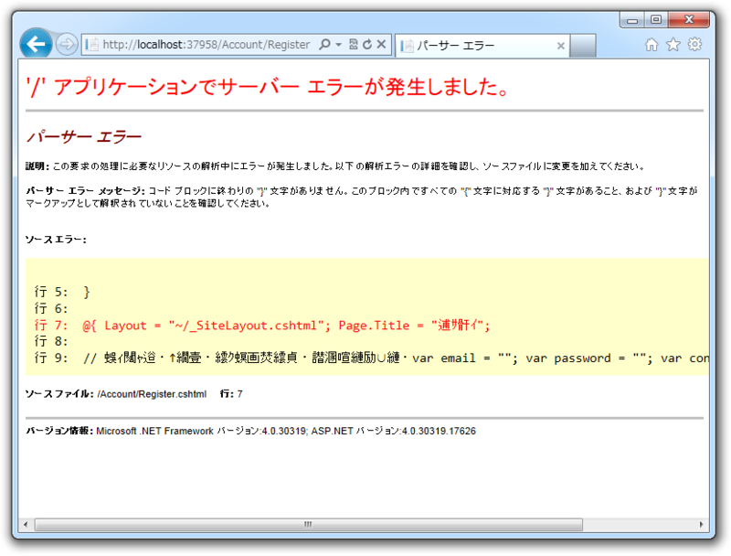
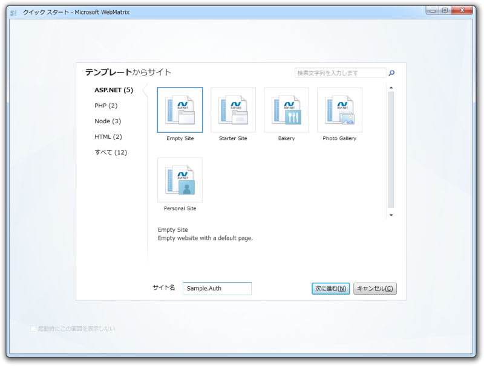
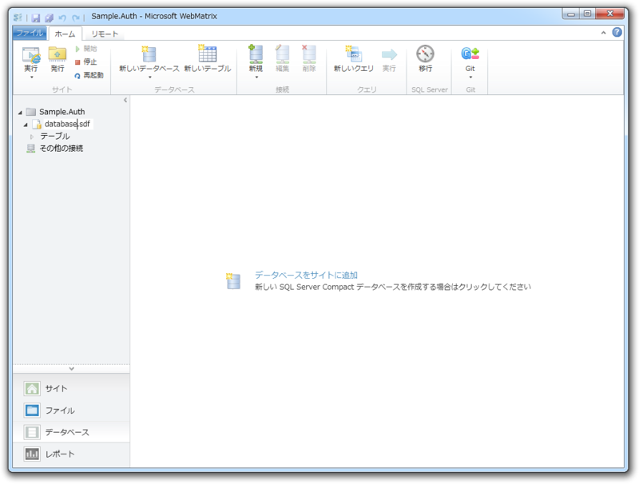
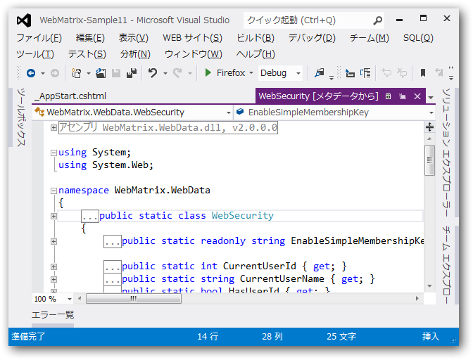
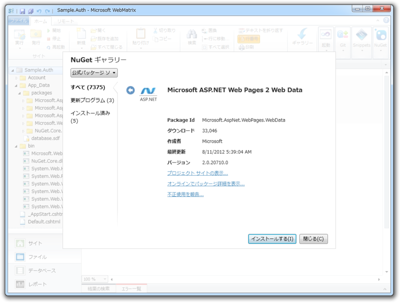
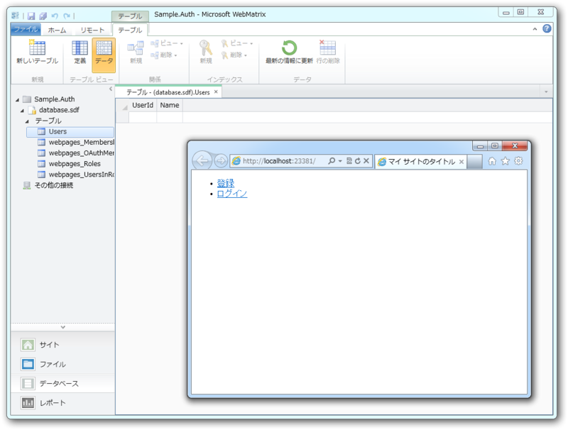

WebMatrix でユーザー認証機能 ―― 準備編
公開日：
お次はユーザー認証機能に挑戦しますかね？ Webサイトでデータを扱うとき、ユーザー認証機能がなかったらだいぶ困る。
というわけで、“Startar Site”テンプレートをみながら勉強しようかなぁ、と思ったのだけど……

ナンテコッタイ／(^o^)＼ ソースを見てみたら文字化けしてたり改行が吹っ飛んでたりで、一部ソースコードがぶっ壊れていた。修正を試みたのだけれど、途中で「いや待て、“Empty Site”から自分で作ったほうが勉強になるかもしれない」と思い直し、まっさらなWebサイトを作ってユーザー認証機能を追加してみることにした。

データベースを作成
まずはユーザー情報を格納するデータベースを作成。名前は……思いつかなかったから“database.sdf”でいいや。

リネームした時のことを考えて、データベース名は App に格納しておくことにした。アプリケーションの起動時に実行される _AppStart.cshtml に記述しておく。
#_AppStart.cshtml@{ App.Database = "database"; // 拡張子は要らないっぽい }
ユーザー情報テーブルを作成
次に、認証情報を保存しておくテーブルを作成する。 WebMatrix では WebSecurity Helper というお手軽な認証システムがあるらしい。“Startar Site”テンプレートでも利用されていたのでそれを使おう。 WebSecurity.InitializeDatabaseConnection() でユーザー情報を管理するテーブルが初期化されるみたい。
#_AppStart.cshtml@{ App.Database = "database";
WebSecurity.InitializeDatabaseConnection( App.Database, // データベース名 "Users", // テーブル名 "UserId", // ID を格納するカラム "Name", // 一意なユーザー名を格納するカラム true // テーブルがなかったら作れ ); }
しかし、「WebSecurity などというクラスは知らない」と怒られてしまう。デフォルトでは入っていないのね……

“Startar Site”テンプレートを「Visual Studio」でみてみたら、 WebMatrix.WebData.dll というアセンブリが必要であるらしい。これもどうせ NuGet で取得できるんでしょ？ わかってる、わかってる！
Microsoft ASP.NET Web Page 2 Web Data をインストール

そこで適当に「WebData」などと検索してみたところ、「Microsoft ASP.NET Web Page 2 Web Data」というのがどうもあやしいくさい。さっそくインストールしてみると……ビンゴ！ 無事、Web サイトを［実行］できました。テーブルもちゃんと作成されているみたい（まだからっぽだけど！）。

#Default.cshtml@{
}
<!DOCTYPE html>
<html lang="ja"> <head> <meta charset="utf-8" /> <title>マイ サイトのタイトル</title> </head> <body> <!– Starter Site テンプレートからパクって魔改造してみた！ –> <section id="login"> @if (WebSecurity.IsAuthenticated) { <ul> <li><a href="~/Users/@WebSecurity.CurrentUserName"> @WebSecurity.CurrentUserName</a></li> <li><a href="~/Account/Logout">ログアウト</a></li> </ul> } else { <ul> <li><a href="~/Account/Register">登録</a></li> <li><a href="~/Account/Login">ログイン</a></li> </ul> } </section> </body> </html>
コレで準備は完了といったところかな。とりあえず、 Register / Login / Logout を作って、ユーザーページも表示できるようにしたいな。